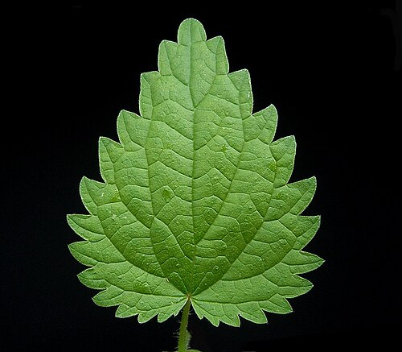
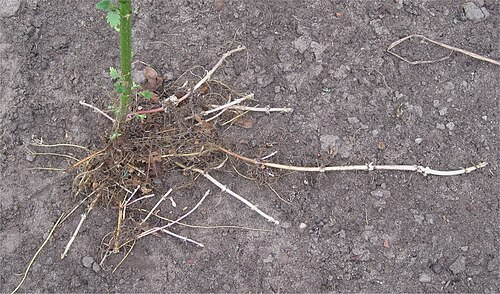

Pokrzywa zwyczajna
Urtica dioica · rodzina pokrzywowate (Urticaceae)



Występowanie
Cała Polska, pospolita
Wysokość
30–150 cm
Kwitnienie
VI – IX
Zbiór liści
V – VII (przed kwitnieniem)
Zbiór korzeni
IX – X lub III – IV
Surowiec
Liście, korzeń, nasiona
Opis i występowanie
Wieloletnia bylina dorastająca do 150 cm. Łodyga czworokątna, prosta, gęsto owłosiona parzącymi włoskami, które po dotknięciu wstrzykują pod skórę kwas mrówkowy, histaminę i acetylocholinę — stąd charakterystyczne pieczenie i bąble.
Liście jajowato-lancetowate, ząbkowane na brzegach, ułożone naprzeciwlegle. Kwitnie od czerwca do września — niepozorne zielonkawe kwiaty zwisają w kłosach. Roślina dwupienna (osobno męskie i żeńskie egzemplarze).
Rośnie wszędzie tam, gdzie gleba jest żyzna, wilgotna i bogata w azot — przy płotach, na zrębach, w opuszczonych ogrodach, nad rzekami, w lasach łęgowych. Wskaźnik gleb azotowych.
Skład — co cennego ma w sobie
| Składnik | Co daje |
|---|---|
| Żelazo (4 mg/100g) | Antyanemiczne — więcej niż w szpinaku |
| Witamina C (333 mg/100g) | 4× więcej niż cytryna; wzmacnia odporność |
| Witamina K, B2, kwas foliowy | Krzepnięcie krwi, metabolizm |
| Krzem, wapń, magnez, potas | Włosy, paznokcie, kości |
| Chlorofil | Oczyszcza krew, dotlenia tkanki |
| Flawonoidy, garbniki | Działanie przeciwzapalne |
| Sterole (w korzeniu) | Wspomaganie prostaty (BPH) |
| Białko (do 25% w suchej masie) | Komplet aminokwasów — "warzywne mięso" |
Na co pomaga — działanie lecznicze
- Anemia — wysoka biodostępność żelaza + witamina C wzmaga przyswajanie.
- Włosy i skóra głowy — wzmacnia cebulki, zmniejsza wypadanie, łojotok; klasyczna płukanka.
- Drogi moczowe — moczopędna; pomaga przy zapaleniach pęcherza, kamicy nerkowej.
- Stawy, reumatyzm, dna — wspomaga wydalanie kwasu moczowego.
- Wątroba, oczyszczanie organizmu — typowa „kuracja wiosenna" 2-3 tygodnie.
- Prostata (BPH) — korzeń pokrzywy w preparatach na łagodny przerost (np. Prostamol).
- Cukrzyca typu 2 — łagodnie obniża glikemię.
- Alergie (sezonowe) — paradoksalnie: hamuje wydzielanie histaminy w stanach przewlekłych.
- Trądzik, egzema — wewnętrznie i zewnętrznie (przemywanie).
Zbiór i suszenie
- Liście — od maja do lipca, przed kwitnieniem (najwięcej składników). Najlepiej młode szczyty pędów (15-20 cm). Zbieraj w rękawicach!
- Korzeń — wczesną wiosną lub jesienią. Oczyść z ziemi, pokrój.
- Nasiona — sierpień-wrzesień, gdy są dojrzałe i zaczynają się rozsiewać.
- Suszenie — w cieniu, max 35°C, przewiewne miejsce. Susz cienką warstwą na siatkach. Po wyschnięciu liście powinny być kruche.
- Przechowywanie — szczelnie w słoikach z dala od światła. Ważność: 12 miesięcy.
💡 Pokrzywa traci moc parzenia po suszeniu, gotowaniu, zamrożeniu i blanszowaniu. Świeża, ale "ugnieciona" wałkiem też.
Przepisy
🍵 Napar (herbata) — codzienna kuracja
- Łyżkę suszonych liści zalej szklanką wrzątku.
- Przykryj spodkiem (olejki!), zaparzaj 10-15 minut.
- Pij 2-3 razy dziennie między posiłkami, kuracja 2-3 tygodnie.
🥬 Sok z młodej pokrzywy (najsilniejsze działanie)
- Zerwij młode szczyty pokrzywy w rękawicach.
- Umyj, zmiksuj z odrobiną wody lub przepuść przez wyciskarkę.
- Przecedź przez gazę. Sok ma piękny ciemnozielony kolor.
- Pij łyżkę stołową rano na czczo. Można rozcieńczyć sokiem jabłkowym (gorzki).
- Przechowuj 24h w lodówce lub zamroź w kostkach do lodu.
💆 Płukanka na włosy (klasyczna)
- Gotuj liście w 1 l wody przez 15-20 minut pod przykryciem.
- Odstaw na 30 minut, przecedź.
- Po umyciu włosów szamponem zwilż skórę głowy i włosy płukanką (nie spłukuj).
- Stosuj 2-3× tygodniowo przez 1-2 miesiące. Włosy stają się grubsze, mniej wypadają.
🍲 Zupa z pokrzywy (jadalna i pożywna)
- Cebulę i ząbek czosnku zeszklij na maśle, dodaj cebulę pora.
- Wlej 1 l bulionu warzywnego lub drobiowego, gotuj 10 min.
- Dodaj 2 garście umytych pokrzyw (świeżych lub mrożonych), gotuj 5 min.
- Zmiksuj na krem. Dopraw solą, pieprzem, gałką muszkatołową.
- Podawaj z jajkiem ugotowanym na półtwardo i grzankami.
🍶 Nalewka z pokrzywy
- Liście włóż do słoika, zalej alkoholem.
- Odstaw na 4 tygodnie w ciemne miejsce, codziennie potrząśnij.
- Przecedź, przelej do butelek z ciemnego szkła.
- Pij 1 łyżeczkę dziennie lub używaj zewnętrznie do nacierania skóry głowy.
🌱 Gnojówka z pokrzywy (do ogrodu)
- Pokrzywę pokrój, włóż do plastikowego (nie metalowego!) wiadra.
- Zalej deszczówką lub odstaną wodą.
- Mieszaj codziennie kijem. Gotowa, gdy przestanie się pienić (~10-14 dni).
- Rozcieńczyć 1:10 — podlewaj rośliny (świetne na pomidory, ogórki, róże). 1:20 — opryskiwanie liści przeciwko mszycom.
✓ Zalety
- Wszystkie części użyteczne — liście, korzeń, nasiona
- Bardzo szeroki zakres działania — od włosów po stawy
- Bogata w żelazo i witaminę C — idealna przy anemii
- Bezpłatna i powszechnie dostępna — rośnie wszędzie
- Można zbierać 3 razy w roku po przycięciu
- Jadalna — zupy, pierogi, pesto, smoothie
- Świetna w ogrodzie jako naturalny nawóz i odstraszacz szkodników
✗ Wady i przeciwwskazania
- Świeża parzy — wymaga rękawic przy zbiorze
- Działanie moczopędne — uzupełniaj płyny, unikaj wieczorem
- Ostrożnie przy obrzękach związanych z niewydolnością nerek/serca
- Może obniżać ciśnienie — uważaj przy hipotonii
- Niewskazana w ciąży (działanie kurczące macicę)
- Może wchodzić w interakcje z lekami na nadciśnienie i cukrzycę
- Przedawkowanie → podrażnienia żołądka, biegunka
⚠ Nie myl z pokrzywą żegawką (Urtica urens). Roślina roczna (nie bylina), mniejsza (do 50 cm), liście i łodyga owłosione gęściej. Parzy znacznie silniej niż zwyczajna. Ma podobne właściwości lecznicze, ale słabsze — zbieraj tylko gdy masz pewność gatunku (brak czerwonawej łodygi, mniejszy rozmiar). Obie są jadalne i bezpieczne — nie są trujące.
Ciekawostki
- Włókno pokrzywowe — w średniowieczu tkano z niej tkaniny mocniejsze od lnu. Mundury żołnierzy I wojny światowej szyte z pokrzywy gdy zabrakło bawełny.
- Barwnik — z liści żółty, z korzenia żółtozielony (do farbowania wełny).
- Karma dla bydła i drobiu — kury chętniej znoszą jaja, krowy dają więcej mleka.
- Mit „kuracji pokrzywą" — chłostanie chorych miejsc świeżą pokrzywą (urtikacja) — domorosła terapia reumatyzmu, używana do dziś w niektórych regionach.
- Po przymrozku pokrzywa wciąż jadalna — można zbierać do listopada.